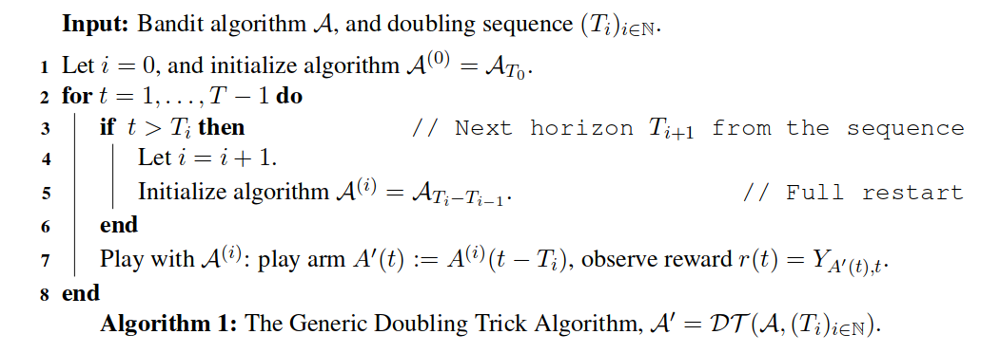
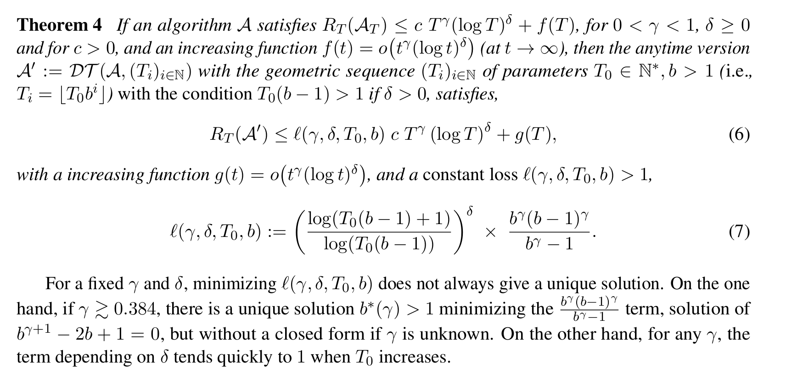
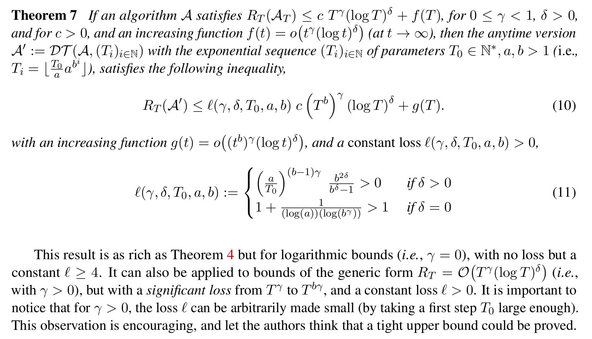
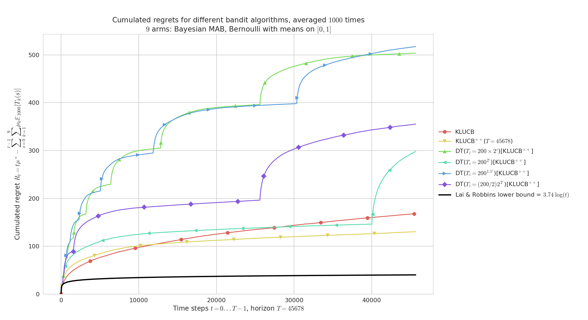
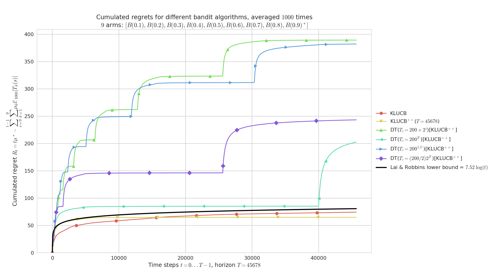
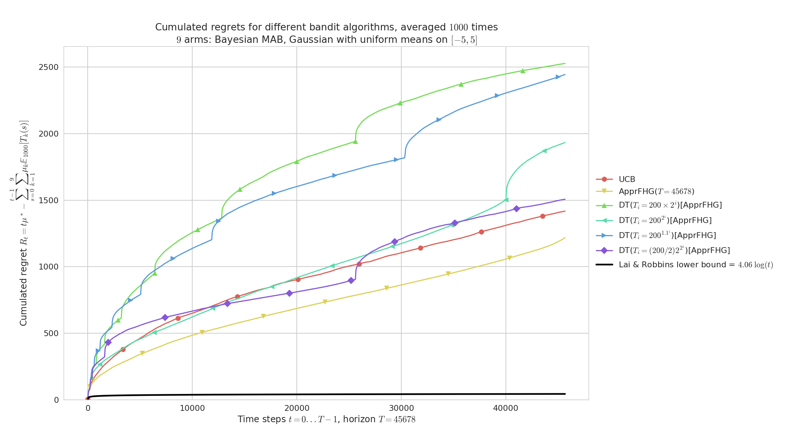
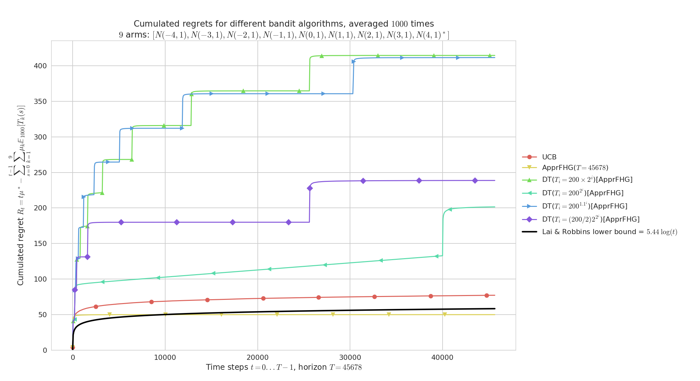
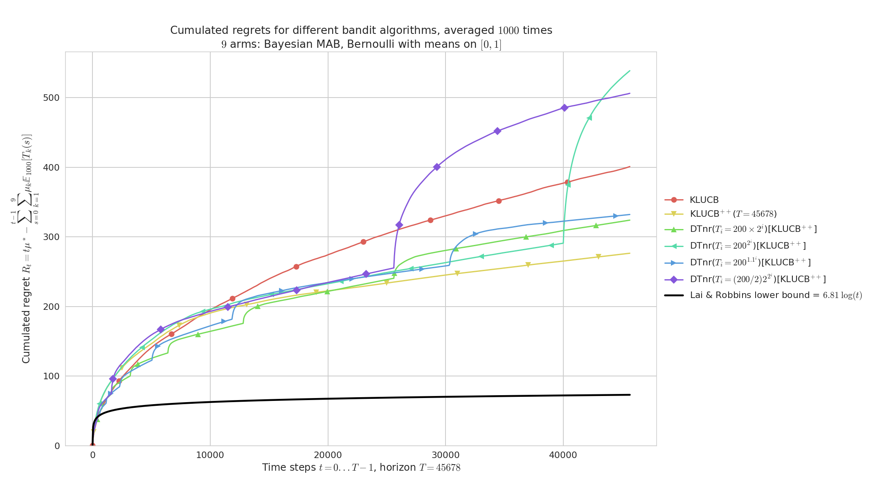
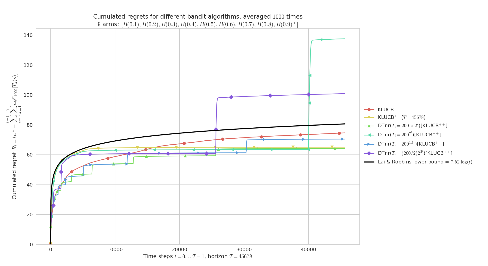

Doubling Trick for Multi-Armed Bandits¶
I studied what Doubling Trick can and can’t do for multi-armed bandits, to obtain efficient anytime version of non-anytime optimal Multi-Armed Bandits algorithms.
The Doubling Trick algorithm, denoted $DT(A, (T_i))$ for a diverging increasing sequence $T_i$, is the following algorithm:
Policies/DoublingTrick.py
Long story short, we proved the two following theorems.
For geometric sequences¶
It works for minimax regret bounds (in$R_T = \mathcal{O}(\sqrt{T}))$, with a constant multiplicative loss$\leq 4$, but not for logarithmic regret bounds (in$R_T = \mathcal{O}(\log T))$.
https://hal.inria.fr/hal-01736357
For exponential sequences¶
It works for logarithmic regret bounds (in$R_T = \mathcal{O}(\log T))$, but not for minimax regret bounds (in$R_T = \mathcal{O}(\sqrt{T}))$.
https://hal.inria.fr/hal-01736357
Article¶
I wrote a research article on that topic, it is a better introduction as a self-contained document to explain this idea and the algorithms. Reference: [What the Doubling Trick Can or Can’t Do for Multi-Armed Bandits, Lilian Besson and Emilie Kaufmann, 2018].
PDF : BK__ALT_2018.pdf | HAL notice : BK__ALT_2018 | BibTeX : BK__ALT_2018.bib | Source code and documentationPublished
Maintenance
Ask Me Anything !
Configuration¶
A simple python file, configuration_comparing_doubling_algorithms.py, is used to import the arm classes, the policy classes and define the problems and the experiments.
For example, we can compare the standard anytime klUCB algorithm against the non-anytime klUCBPlusPlus algorithm, as well as 3 versions of DoublingTrickWrapper applied to klUCBPlusPlus.
configuration = {
"horizon": 10000, # Finite horizon of the simulation
"repetitions": 100, # number of repetitions
"n_jobs": -1, # Maximum number of cores for parallelization: use ALL your CPU
"verbosity": 5, # Verbosity for the joblib calls
# Environment configuration, you can set up more than one.
"environment": [
{
"arm_type": Bernoulli,
"params": 0.1, 0.2, 0.3, 0.4, 0.5, 0.6, 0.7, 0.8, 0.9
}
],
# Policies that should be simulated, and their parameters.
"policies": [
{"archtype": UCB, "params": {} },
{"archtype": klUCB, "params": {} },
{"archtype": klUCBPlusPlus, "params": { "horizon": 10000 } },
]
}
Then add a Doubling-Trick bandit algorithm (DoublingTrickWrapper class), you can use this piece of code:
configuration["policies"] += [
{
"archtype": DoublingTrickWrapper,
"params": {
"next_horizon": next_horizon,
"full_restart": full_restart,
"policy": BayesUCB,
}
}
for full_restart in [ True, False ]
for next_horizon in [
next_horizon__arithmetic,
next_horizon__geometric,
next_horizon__exponential_fast,
next_horizon__exponential_slow,
next_horizon__exponential_generic
]
]
How to run the experiments ?¶
You should use the provided Makefile file to do this simply:
# if not already installed, otherwise update with 'git pull'
git clone https://github.com/SMPyBandits/SMPyBandits/
cd SMPyBandits
make install # install the requirements ONLY ONCE
make comparing_doubling_algorithms # run and log the main.py script
Some illustrations¶
Here are some plots illustrating the performances of the different policies implemented in this project, against various problems (with Bernoulli and UnboundedGaussian arms only):
Doubling-Trick with restart, on a “simple” Bernoulli problem¶
Doubling-Trick with restart, on a "simple" Bernoulli problem
Regret for Doubling-Trick, for $K=9$ Bernoulli arms, horizon $T=45678$, $n=1000$ repetitions and $\mu_1,\ldots,\mu_K$ taken uniformly in $[0,1]^K$.
Geometric doubling ($b=2$) and slow exponential doubling ($b=1.1$) are too slow, and short first sequences make the regret blow up in the beginning of the experiment.
At $t=40000$ we see clearly the effect of a new sequence for the best doubling trick ($T_i = 200 \times 2^i$).
As expected, kl-UCB++ outperforms kl-UCB, and if the doubling sequence is growing fast enough then Doubling-Trick(kl-UCB++) can perform as well as kl-UCB++ (see for $t < 40000$).
Doubling-Trick with restart, on randomly taken Bernoulli problems¶
Doubling-Trick with restart, on randomly taken Bernoulli problems
Similarly but for $\mu_1,\ldots,\mu_K$ evenly spaced in $[0,1]^K$ (${0.1,\ldots,0.9}$).
Both kl-UCB and kl-UCB++ are very efficient on “easy” problems like this one, and we can check visually that they match the lower bound from Lai & Robbins (1985).
As before we check that slow doubling are too slow to give reasonable performance.
Doubling-Trick with restart, on randomly taken Gaussian problems with variance $V=1$¶
Doubling-Trick with restart, on randomly taken Gaussian problems with variance V=1
Regret for $K=9$ Gaussian arms $\mathcal{N}(\mu, 1)$, horizon $T=45678$, $n=1000$ repetitions and $\mu_1,\ldots,\mu_K$ taken uniformly in $[-5,5]^K$ and variance $V=1$.
On “hard” problems like this one, both UCB and AFHG perform similarly and poorly w.r.t. to the lower bound from Lai & Robbins (1985).
As before we check that geometric doubling ($b=2$) and slow exponential doubling ($b=1.1$) are too slow, but a fast enough doubling sequence does give reasonable performance for the anytime AFHG obtained by Doubling-Trick.
Doubling-Trick with restart, on an easy Gaussian problems with variance $V=1$¶
Doubling-Trick with restart, on an easy Gaussian problems with variance V=1
Regret for Doubling-Trick, for $K=9$ Gaussian arms $\mathcal{N}(\mu, 1)$, horizon $T=45678$, $n=1000$ repetitions and $\mu_1,\ldots,\mu_K$ uniformly spaced in $[-5,5]^K$.
On “easy” problems like this one, both UCB and AFHG perform similarly and attain near constant regret (identifying the best Gaussian arm is very easy here as they are sufficiently distinct).
Each doubling trick also appear to attain near constant regret, but geometric doubling ($b=2$) and slow exponential doubling ($b=1.1$) are slower to converge and thus less efficient.
Doubling-Trick with no restart, on randomly taken Bernoulli problems¶
Doubling-Trick with no restart, on randomly taken Bernoulli problems
Regret for $K=9$ Bernoulli arms, horizon $T=45678$, $n=1000$ repetitions and $\mu_1,\ldots,\mu_K$ taken uniformly in $[0,1]^K$, for Doubling-Trick no-restart.
Geometric doubling (\eg, $b=2$) and slow exponential doubling (\eg, $b=1.1$) are too slow, and short first sequences make the regret blow up in the beginning of the experiment.
At $t=40000$ we see clearly the effect of a new sequence for the best doubling trick ($T_i = 200 \times 2^i$).
As expected, kl-UCB++ outperforms kl-UCB, and if the doubling sequence is growing fast enough then Doubling-Trick no-restart for kl-UCB++ can perform as well as kl-UCB++.
Doubling-Trick with no restart, on an “simple” Bernoulli problems¶
Doubling-Trick with no restart, on an "simple" Bernoulli problems
$K=9$ Bernoulli arms with $\mu_1,\ldots,\mu_K$ evenly spaced in $[0,1]^K$.
On easy problems like this one, both kl-UCB and kl-UCB++ are very efficient, and here the geometric allows the Doubling-Trick no-restart anytime version of kl-UCB++ to outperform both kl-UCB and kl-UCB++.
These illustrations come from my article, [What the Doubling Trick Can or Can’t Do for Multi-Armed Bandits, Lilian Besson and Emilie Kaufmann, 2018].
📜 License ?  GitHub license¶
GitHub license¶
MIT Licensed (file LICENSE).
© 2016-2018 Lilian Besson.
Open Source? Yes!
 Maintenance
Maintenance
 Ask Me Anything !
Ask Me Anything !
Analytics
 PyPI version
PyPI version
 PyPI implementation
PyPI implementation
 PyPI pyversions
PyPI pyversions
 PyPI download
PyPI download
 PyPI status
PyPI status
Documentation Status
 Build Status
Build Status
Stars of https://github.com/SMPyBandits/SMPyBandits/
Releases of https://github.com/SMPyBandits/SMPyBandits/